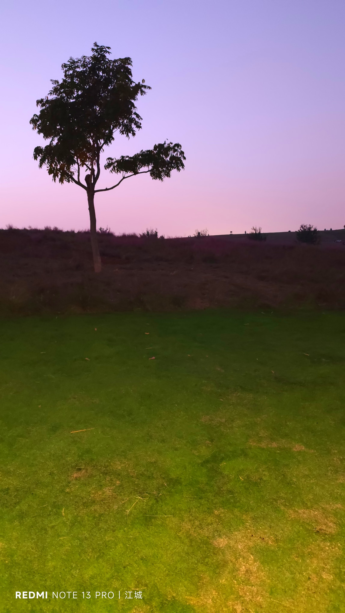
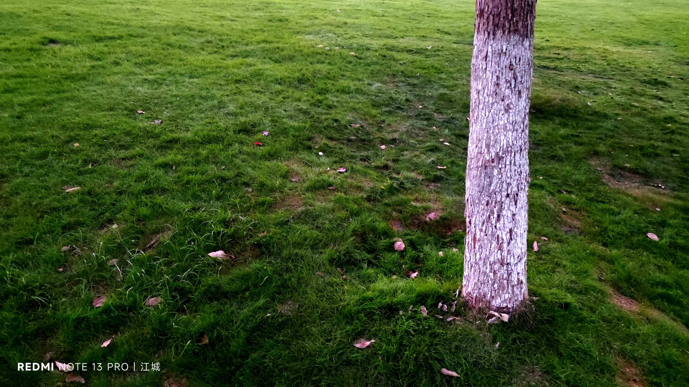
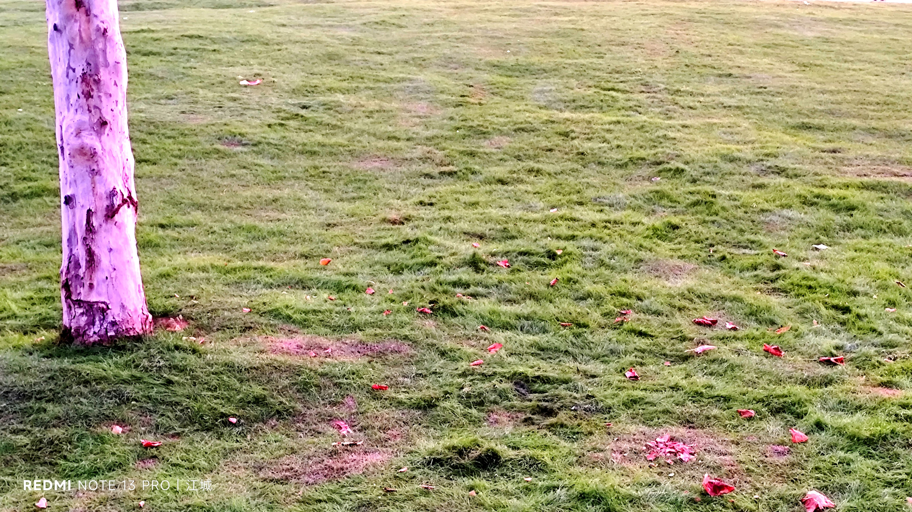
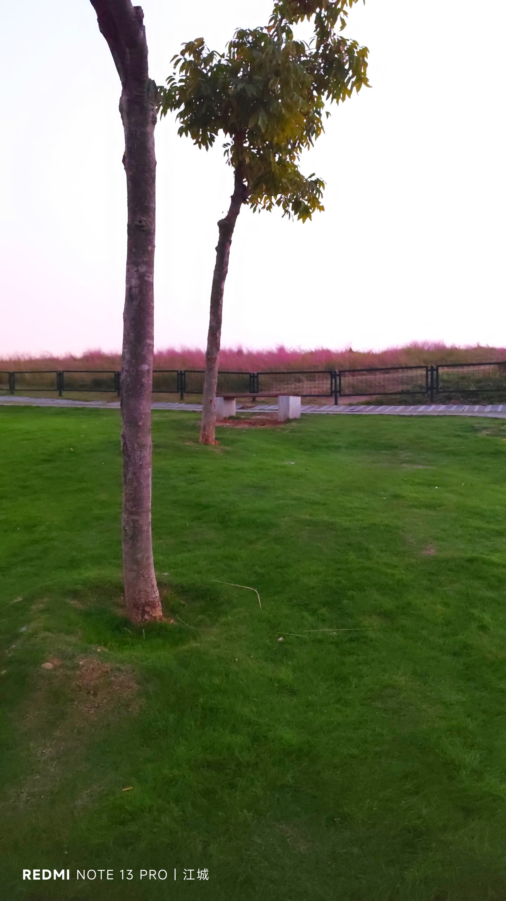
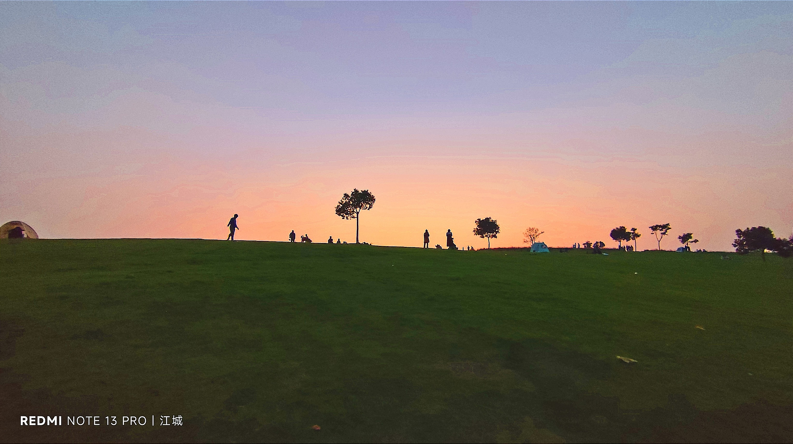
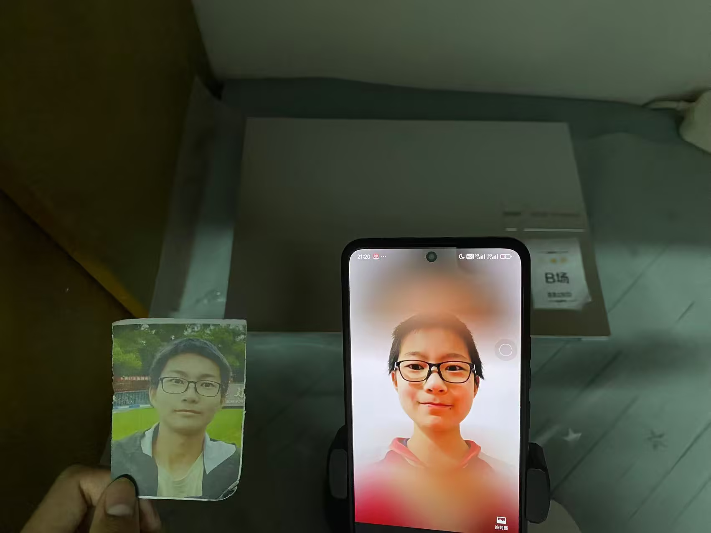
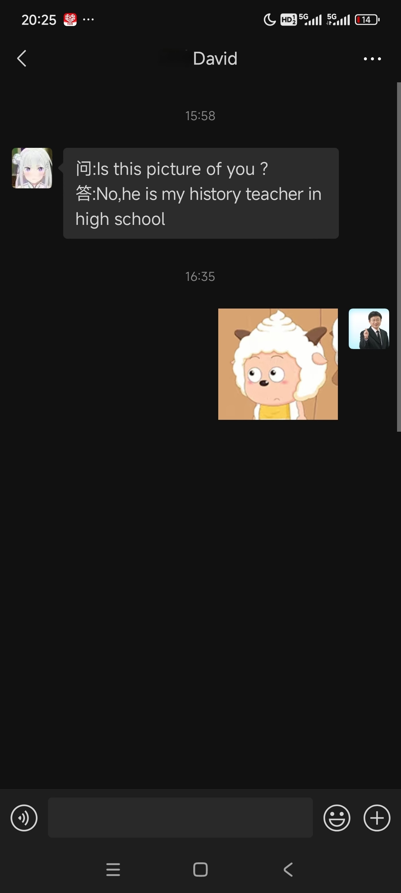

Journal · 2024-11-03
湖北省武汉市
2024年11月3日 21:29
我：你刚才提到微信朋友圈头像，我翻了翻，发现我从小到大根本就没变过！
余老师：确实！一毛一样！可能是因为你长得太年轻了！







Nov 3, 2024 21:29
Me: You just mentioned WeChat Moments profile pictures, so I scrolled through and realized mine has never changed since I was a kid!
Teacher Yu: Indeed! Exactly the same! Maybe it's because you look so young!
3 nov. 2024 21:29
Moi : Tu viens de parler des photos de profil de WeChat Moments, j'ai fait défiler et j'ai découvert que la mienne n'avait jamais changé depuis mon enfance !
Professeur Yu : C'est vrai ! Rigoureusement identique ! Peut-être parce que tu fais si jeune !
03.11.2024 21:29
Ich: Du hast gerade die Profilbilder in den WeChat Moments erwähnt, ich habe durchgesehen und festgestellt, dass sich meins von Kindheit an überhaupt nie verändert hat!
Lehrer Yu: Stimmt! Haargenau gleich! Vielleicht, weil du so jung aussiehst!